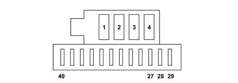

BATTERY COMPARTMENT FUSE HOLDER
- Path
- Descriptions > 55 ELECTRICAL EQUIPMENT > 5505 INSTRUMENT/GAUGE ELECTRICAL CIRCUITS > 5505A MULTI-FUNCTION COMPONENTS > BATTERY COMPARTMENT FUSE HOLDER
- Kind
- system description
- Applies to
- all engines; all production periods
- Interactive page
- https://sloeber94.github.io/elrnDB-fUlss/en/#/179000382
Applies to: all engines; all production periods
INTRODUCTION
There is a fuse box, located in the battery compartment (by the front passenger's feet).

FUSES | Amperage | Function |
|---|---|---|
1 | 40A | Right electric sliding side door |
2 | 40A | Left electric sliding side door |
3 | 30A | HI-FI amplifier |
4 | - | Free |
29 | - | Free |
30 | - | Free |
31 | - | Free |
32 | 25A | Electrically adjusted driver's seat |
33 | 25A | Electrically adjusted passenger seat |
34 | 20A | Third row sun roof |
35 | 20A | Second row sun roof |
36 | 10A | Passenger heated seat |
37 | 10A | Driver's heated seat |
38 | 15A | Child electric locks |
39 | 20A | 12V rear socket |
40 | 20° | 12V front socket |